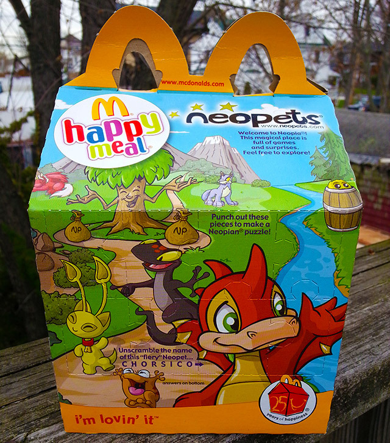
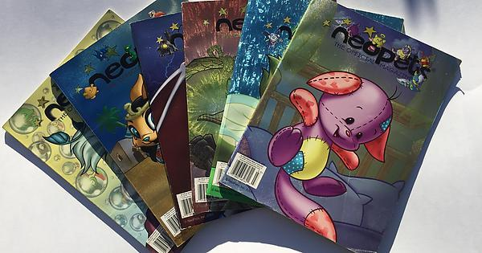
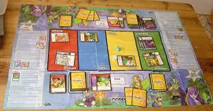
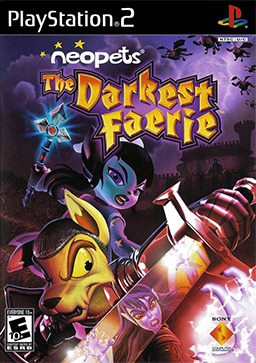
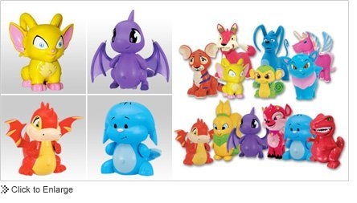

Everyone talks about when Pokemon was everywhere, but what about when Neopets was at its prime?
The Neopets cereal, McDonalds and Burger King toys, magazines, boardgame, card game, goddamn PS2 video game, the entirety of Limited Too..